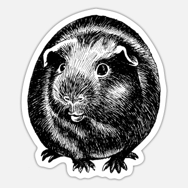

Nasza pierwsza strona internetowa
Witaj na stronie poświeconej tematyce świnkom morskim. Tu dowiesz się wielu ciekawych rzeczy i ciekawostek. Zdobędziesz wiedzę niezbędną do hodowli świnek morskich oraz zapewnieniu im jak najlepszych warunków. Dowiesz się, także co oznaczają poszczególne dźwięki które świnki wydają. Serdecznie zapraszamy!